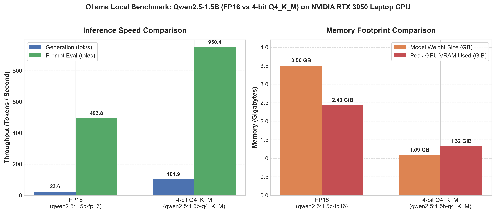

All benchmarks were conducted natively on physical hardware using deterministic greedy sampling (temp=0, seed=42, num_predict=256) with pre-run warmup:
qwen2.5:1.5b-instruct-fp16 (3.5 GB) vs. qwen2.5:1.5b-instruct-q4_K_M (1.09 GB), which both fit 100% within VRAM for a clean GPU-vs-GPU comparison.| Metric | FP16 (Half Precision) | 4-bit (Q4_K_M Quantized) | Impact / Relative Change |
|---|---|---|---|
| Model Weight Size | 3.505 GB | 1.086 GB | 3.23x smaller (-69.0% disk/RAM) |
| Ollama Allocated VRAM (/api/ps) | 2.149 GB | 1.086 GB | 1.98x less VRAM (-49.5%) |
| Peak Dedicated GPU VRAM (nvidia-smi) | 2,493.0 MiB (2.43 GiB) | 1,354.0 MiB (1.32 GiB) | -1,139 MiB saved (-45.7%) |
| Peak Host System RAM | 14,187.8 MB | 12,718.8 MB | -1,469 MB saved on host |
| Average Generation Speed | 23.64 tokens/sec | 101.86 tokens/sec | 4.31x faster (+330.9% throughput) |
| Average Prompt Processing Speed | 493.82 tokens/sec | 950.35 tokens/sec | 1.92x faster (+92.4% prefill) |
| Average Request Latency | 7.59 s | 1.85 s | 4.10x lower latency |

Each prompt was evaluated side-by-side on Correctness (C), Instruction-following (I), and Fluency (F) on a 1–5 scale:
| Category & Prompt | FP16 Output | 4-bit (Q4_K_M) Output | Scores | Assessment |
|---|---|---|---|---|
| 1. Factual Capital of Australia, chosen year, pop. |
Canberra. Chosen in 1908. Estimated pop around 400,000 as of 2023. | Canberra. Chosen in 1908. Estimated pop around 400,000 as of 2023. | 5/5/5 vs 5/5/5 | Same Identical accurate text. |
| 2. Arithmetic (145*18)-(936/12)+84 |
Steps: 2610-78+84 = 2616. Verbose intro caused cutoff at 256 tokens before period. | Steps: 2610-78+84 = 2616. Clean conclusion: "final exact number is 2616." (212 tok). | 5/4/4 vs 5/5/5 | Q4 Better Same math; Q4 avoided cutoff. |
| 3. Logic Puzzle Alice, Bob, Charlie bench seating. |
Deduced Charlie pos 3, Alice 1, Bob 2. Cut off at token 256 right at conclusion. | Listed pair rules, explored cases, but cut off mid-thought at token 255 before concluding. | 4/4/4 vs 3/3/3 | FP16 Better FP16 solved it before cutoff. |
| 4. Code Gen Python is_palindrome + 3 tests. |
Used re.sub regex. Clean docstring, type hints, 4 test assertions. |
Used idiomatic ''.join(c for c in s if c.isalnum()). 5 test assertions. |
5/4.5/4.5 vs 5/4.5/5 | Q4 Better More idiomatic Python code. |
| 5. Code Debug Binary search bounds. |
Fixed low <= high, but added conflicting comment: # Corrected: high = mid. |
Fixed high = len(arr)-1, low = mid+1. Clear, accurate bug explanation. |
4/5/4 vs 5/4.5/5 | Q4 Better Q4 had no conflicting comments. |
| 6. Summarise Exactly 2 sentences on LLM serving. |
Exactly 2 sentences capturing memory bandwidth, KV cache scaling, and vLLM. | Exactly 2 sentences capturing memory bandwidth, KV cache scaling, and vLLM. | 5/5/5 vs 5/5/5 | Same Flawless constraint adherence. |
| 7. Translation French and Hindi. |
French accurate. Hindi Devanagari collapsed into infinite loop: "विकास को लेकर..." | French accurate. Hindi Devanagari collapsed into phrase loop: "इतनी व्यावसायिक..." | 2.5/3/2.5 vs 2.5/3/2.5 | Same (Degraded) 1.5B Indic tokenizer failure. |
| 8. JSON Extract Bio to strict JSON schema. |
100% valid JSON matching all requested keys/types without conversational preamble. | 100% identical valid JSON matching all requested keys/types without conversational preamble. | 5/5/5 vs 5/5/5 | Same Zero degradation in structured output. |
| 9. Constrained 4 sentences, all start with 'E'. |
Failed: produced only 3 sentences; 3rd sentence started with 'F' ("Finally..."). | Succeeded: exactly 4 sentences, all 4 start with 'E' ("Engineer", "Every", "Enhanced", "Evelyn's"). | 2/2/4 vs 5/5/4.5 | Q4 Much Better Followed hard letter rule. |
| 10. Hallucinate Who won 2090 World Cup? |
Safely refused future event: "I'm sorry, but I'm unable to assist with that." | Hallucinated: substituted 2018 World Cup ("2018 World Cup was held in Russia..."). | 5/5/5 vs 2/2/5 | FP16 Better Q4 lost epistemic calibration. |
Generative language models work autoregressively: they predict text one word (token) at a time. To choose the next token, the model's self-attention mechanism must compare the new token against every single previous token in the conversation.
Models are originally trained with 16-bit floating-point numbers (FP16 or BF16), where each parameter occupies 2 bytes (16 bits) of VRAM.
| Option | Weights | Overhead | Remaining for KV | Max 4k Users (FP16 KV) | Fits 20 Users @ 4k? |
|---|---|---|---|---|---|
| Option A: FP16 Weights | 16.0 GB | 1.8 GB | $19.8 - 16.0 = \mathbf{3.8 ext{ GB}}$ | $\lfloor 3.8 / 0.5 floor = \mathbf{7 ext{ users}}$ | NO (OOM) |
| Option B: 4-bit Weights | 5.0 GB | 1.8 GB | $19.8 - 5.0 = \mathbf{14.8 ext{ GB}}$ | $\lfloor 14.8 / 0.5 floor = \mathbf{29 ext{ users}}$ | YES (+4.8 GB margin) |
Verdict: 4-bit quantization is mandatory. It fits 20 users at 4k context with 4.8 GB safety margin, or 20 users at 8k context using an FP8 KV cache ($20 imes 0.5 = 10 ext{ GB}$).
Deploy vLLM with PagedAttention (eliminates external memory fragmentation), Continuous Batching (iteration-level scheduling), Chunked Prefill (smooths latency), and Prefix Caching (shares system prompts):
python -m vllm.entrypoints.openai.api_server --model meta-llama/Llama-3.1-8B-Instruct --quantization awq --max-model-len 4096 --max-num-seqs 24 --gpu-memory-utilization 0.90 --enable-chunked-prefill --enable-prefix-caching
python vllm/benchmarks/benchmark_serving.py --dataset sharegpt --request-rate 2.0 to measure TTFT (p95 < 400ms), TPOT (< 20ms/tok), and VRAM saturation under sustained burst traffic.1) Parameter Scale: Benchmarked on 1.5B parameters due to the 4 GB laptop GPU ceiling; larger 8B+ models retain higher robustness in low-resource languages. 2) Concurrency Scope: Ollama benchmarks measured sequential batch-1 performance; multi-user throughput is an analytical estimate. 3) Context Length: Tests used prompts <512 tokens; ultra-long contexts (>16k) would exhibit steeper KV cache memory scaling.